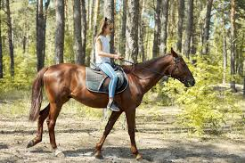
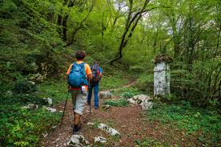
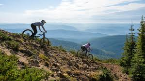

Ιππασία Είναι μια εξαιρετική
δραστηριότητα που συνδυάζει
την άσκηση και την επαφή με
τη φύση. Βελτιώνει την ισορροπία,
τη στάση του σώματος και την αυτοπεποίθηση.
Καλλιεργεί,επίσης,τον δεσμό ανθρώπου και αλόγου.

Ορειβασία Μία υπέροχη πρόκληση
σώματος και πνεύματος. Ιδανική για την ενδυνάμωση
της φυσικής αντοχής και της αύξησης της δύναμης.
Η κατάκτηση της κορυφής χαρίζει ψυχική ευεξία.

Πεζοπορία Είναι κατάλληλη
για αυτούς που προτιμούν έναν πιο ήπιο
και προσιτό τρόπο άσκησης. Βελτιώνει την
καρδιοαναπνευστική λειτουργία, ελαχιστοποιεί
το άγχος και βελτιώνει τη σύνδεση του ανθρώπου
με το φυσικό περιβάλλον.

Mountain Biking Για τους περιπετειώδεις
επισκέπτες του “The Forest of the Gods”
είναι ιδανικό το mountain biking. Γυμνάζει όλο το σώμα,
βελτιώνει την αντοχή και την ισορροπία, ενώ προσφέρει
αίσθηση ελευθερίας και έντονη αδρεναλίνη.